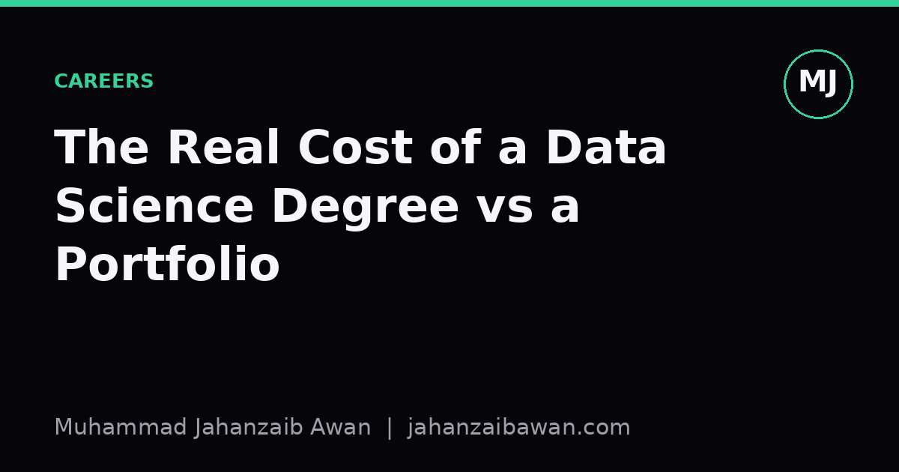

The Real Cost of a Data Science Degree vs a Portfolio
Tuition is only one line in the ledger. The honest comparison has to account for time, signal quality, and what each path actually teaches you to do under scrutiny.

Why this comparison is usually done badly
Most discussions of degree versus portfolio reduce to a single number: tuition fees against the price of a laptop and some online courses. That framing is tidy and almost entirely wrong. The real cost of either path includes time, opportunity cost, the quality of feedback you receive while learning, and how convincingly your work demonstrates judgement rather than just output. A degree and a portfolio are not two prices on the same shelf; they are two different mechanisms for building and signalling competence, and they fail in different places.
I say this as someone currently doing a postgraduate degree in artificial intelligence while also building independent projects. The two are not substitutes for each other in my experience; they cover different gaps. So instead of arguing for one side, I want to lay out the actual cost components, because once you see them clearly, the decision becomes personal rather than ideological. It depends on what you already have, what you are missing, and how much unsupervised discipline you can sustain.
The costs a tuition figure does not capture
Start with time, because it is the cost most often ignored. A full-time taught masters typically runs twelve to eighteen months. During that period you are not earning a full salary, and in many countries you are also paying living costs that would exist anyway but now have no income offsetting them. If your current salary is thirty thousand pounds a year and the course takes eighteen months, the foregone earnings alone are roughly forty-five thousand pounds, often larger than the tuition itself. A portfolio built part time around a job avoids this, but it stretches the timeline: a project that could be done in three focused months of full-time work might take nine months of evenings and weekends, and fatigue has a cost too, even if it never appears on an invoice.
Second, consider the cost of bad feedback loops. A structured programme gives you deadlines, graded assessment, and usually someone checking your reasoning before you ship a conclusion. Left alone, it is easy to build five projects that each quietly commit the same evaluation mistake, say, tuning hyperparameters on the test set, or splitting time series data randomly instead of chronologically. You will not find out until someone in an interview asks the one question that exposes it. A degree does not guarantee you avoid this, but a decent one forces the mistake to surface early, in a dissertation review or a marked assignment, rather than in front of a hiring panel.
Third, there is the cost of breadth you do not yet know you need. Self-directed learners tend to over-invest in the parts of the field they already find interesting and under-invest in the unglamorous parts: experimental design, statistical power, data governance, writing for a non-technical audience. A portfolio built entirely around model architecture, however polished, says little about whether you can scope a problem or communicate an uncertain result honestly. A reasonably designed curriculum, by contrast, drags you through the boring-but-essential material whether you want it or not, which is frustrating in the moment and valuable a year later.
What the portfolio buys that the degree often cannot
None of this means the degree wins outright. A focused portfolio has its own return that a transcript cannot replicate: concrete, inspectable evidence of judgement under real constraints. A single project done properly, where you state the question, justify the split strategy, report a baseline before the clever model, and are honest about where the result might be fragile, is worth more to most hiring managers than a module mark they cannot interrogate. Grades are a proxy signal; a well-documented repository is a direct one.
There is also a cost-efficiency argument. Suppose you have five years of working experience in a related field, say software engineering or statistics. The marginal knowledge a formal programme adds might be modest relative to its price, because you already have the scaffolding: you can read papers, you understand version control, you know what a confidence interval is for. In that situation, three or four deep projects, each tackling a different failure mode such as class imbalance, distribution shift, or small-sample inference, can close the remaining gap for a fraction of the cost and time, provided you are disciplined enough to seek out critique rather than only praise.
The portfolio route punishes undisciplined learners harshly, though. Without external deadlines, projects drift unfinished, and without external review, errors compound invisibly. I have seen the inverse problem too: people who complete course after course, collecting certificates, without ever shipping a single project that would survive a sceptical question about how the test set was constructed. Credentials without demonstration are as hollow as projects without rigour; both are the same mistake wearing different clothes.
A more honest way to decide
The practical question is not which path is cheaper in the abstract, but which cost you are better positioned to absorb. If you lack structure, feedback, and the broad map of the field, the time cost of a degree buys you something a portfolio struggles to replicate on its own: forced exposure to your own blind spots. If you already have that map and need to prove, not learn, then the money and time saved by building two or three rigorous projects, each with a clearly stated question, a leakage-aware split, a strong baseline, and an honest discussion of limitations, will often outperform a credential that nobody in the room can actually examine.
My own view, shaped by doing both at once, is that the two are complementary rather than competing. The degree gives me structure, deadlines, and access to people who will challenge a sloppy assumption before it becomes a habit. The projects give me something to point at that is mine, verifiable, and specific. If you can only afford one, be honest about which weakness you are actually trying to fix, the lack of structure or the lack of proof, because that, far more than the sticker price, is the real cost you are paying either way.